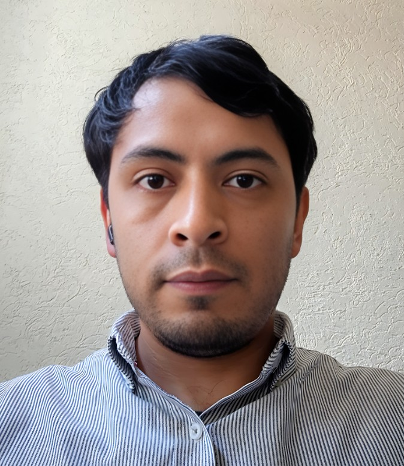

Desarrollador de Software | Diseñador Gráfico

Profesional versátil con más de 10 años de experiencia en desarrollo de software y diseño gráfico, integrando ambas disciplinas para crear soluciones tecnológicas robustas, visualmente atractivas y fáciles de usar.
Experto en conceptualización, bocetaje, diseño de diagramas de flujo y bases de datos UML, así como en la planificación y seguimiento de proyectos con herramientas como Microsoft Project, Jira y GitHub Projects. Amplia experiencia en documentación técnica.
Cuento con amplia experiencia en audio, video, edición de imagen, así como también en animación 2D y 3D.
Cadista / Desarrollador HMI/SCADA | nov. 2019 – jul. 2025
Auditor interno | may. 2018 – sept. 2018
Conductor | ene. 2015 – jul. 2017
Proyectista de espacios | mar. 2013 – nov. 2014
Gerente de sucursal / Instructor de cursos | abr. 2010 – may. 2012
Proyectista de espacios | sep. 2009 – abr. 2010
Auxiliar de ingeniería | jun. 2007 – mar. 2008
Ingeniero de servicio técnico | abr. 2008 – dic. 2008
Busco una posición remota que me permita aportar mi experiencia en desarrollo de software y diseño, colaborando con equipos multidisciplinarios y contribuyendo al crecimiento de la empresa mediante soluciones tecnológicas innovadoras y eficientes.